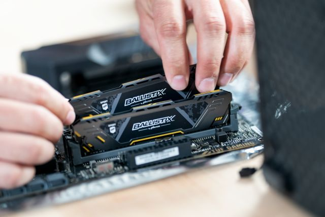

Asesoramiento en Compra de Equipos y Componentes
En BayTech entendemos que elegir los componentes correctos para tu computadora puede ser una tarea complicada, especialmente si no estás familiarizado con las especificaciones técnicas o si deseas sacar el mejor rendimiento por tu presupuesto.
Por eso, te ofrecemos un servicio de asesoramiento personalizado para ayudarte a tomar la mejor decisión según tus necesidades:
Eres gamer?
Te ayudamos a elegir la tarjeta gráfica, procesador, RAM y monitor ideal para tu estilo de juego y tipo de títulos.
Usas tu PC para trabajo o estudio?
Te recomendaremos una configuración balanceada, eficiente y duradera que se ajuste a tu ritmo de trabajo.
Quieres actualizar tu PC actual?
Analizamos tu equipo y te decimos qué piezas puedes mejorar sin gastar de más.

Buscas periféricos?
Te guiamos en la elección de teclados, ratones, monitores, audífonos y más, de buena calidad y al mejor precio.

Nuestro objetivo es que no gastes de más y que cada componente que compres realmente se adapte a lo que necesitas. ¡Con BayTech compras con confianza!